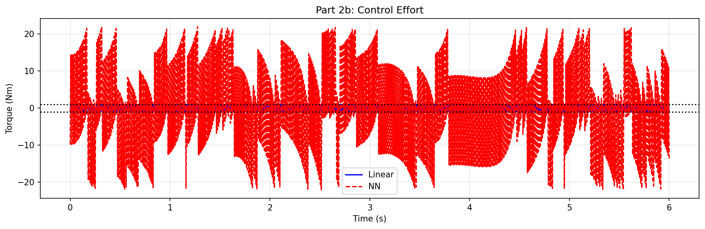

Robot Dynamics & Control Theory
From learning A* path planning → understanding system dynamics → optimal control → adaptive systems
Control theory is the language of making systems do what you want. My journey started with implementing A* path planning on a 6-DOF surgical robot (not knowing what I was doing), then progressed through formal coursework in modern control, optimal control, and reinforcement learning. The arc follows a clear progression: understanding how systems move (dynamics), then how to make them move correctly (linear control), then how to make them move optimally (trajectory optimization), and finally how to adapt when things change (adaptive and learning-based approaches). Each section builds on the previous one.
The Curriculum: Learning Arc
Three years of study, organized around progressively deeper levels of control theory:
Robot Dynamics & Analysis (24-670)
Screw theory, homogeneous transformations, forward kinematics via exponential maps, rigid body dynamics. The mathematical language of robotics.
Modern Control Theory (24-677)
State-space models, controllability, LQR design, Kalman filtering, system stability, pole placement. Linear control fundamentals applied to real systems (Webots simulation).
Optimal Control & RL (16-745)
Trajectory optimization via iLQR, surrogate-based optimization, neural network policies, imitation learning. How to solve complex nonlinear problems.
Real Systems
TWIP simulation, Webots vehicle & UAV control, surgical robot path planning, exoskeleton control validation. Theory applied to concrete problems.
Featured Deep Dive: TWIP Control Theory
The two-wheeled inverted pendulum (TWIP) — essentially a Segway — is a canonical problem in control theory. It's naturally unstable (the system falls without active control), nonlinear, and requires real-time feedback. It's an ideal testbed for comparing control approaches because you can measure success objectively: how long does the robot stay balanced?
Problem Definition
System: A two-wheeled robot with an inverted pendulum on top. The wheels are driven by a motor; the body mass sits high above the contact point.
Challenge: Design a controller that prevents the system from falling. The dynamics are coupled — wheel motion affects body angle, and body angle affects how the wheels must move.
Constraint: The control must run in real-time (333 Hz in simulation) with minimal computation.
Objective: Maximize survival time from an initial perturbation (body tilted 0.1 radians).
System Model & Parameters
- Wheel mass: 173 g | Pendulum mass: 653 g (826 g total)
- Wheel radius: 32.3 mm | Pendulum half-length: 43 mm
- State vector: [wheel angle φ, wheel angular velocity φ̇, body angle θ, body angular velocity θ̇]
- Control input: Motor torque τ (bounded −1 to +1 N⋅m)
- Simulation timestep: 333 Hz (3 ms)
Approach 1: Linear Quadratic Regulator (LQR)
Idea: Linearize the dynamics around the upright equilibrium (θ = 0). Then solve for the optimal linear feedback law u = −K·x that minimizes a weighted cost on states and control effort.
Why: LQR gives a closed-form solution (no iterative optimization needed). It's fast enough for real-time control and handles the natural stability properties of the system well near equilibrium.
Implementation: Compute the linearized system matrices A and B. Solve the Riccati equation for the optimal gain matrix K using scipy.linalg.solve_continuous_are().
Starting from the upright position with initial tilt θ₀ = 0.1 rad:

Figure 1: LQR state evolution over time. The body angle (red) is stabilized back to near-zero within ~0.5 seconds. The wheel angle (blue) grows to balance the pendulum — this is the natural coupling of the system.
LQR Result: System stabilizes successfully from the perturbed initial condition. Survival time is effectively infinite (controller maintains θ ≈ 0 indefinitely).
Key Insight: LQR works well near equilibrium. The linearization is valid for small angles. If you perturb the system too far, LQR loses stability because it doesn't account for nonlinear effects.
Approach 2: Kalman Filter + LQR (Noisy Measurements)
Problem: Real sensors are noisy. You don't have perfect measurements of all states (wheel velocity, body angle, etc.). LQR assumes perfect state knowledge.
Solution: Use a Kalman filter to estimate the true state from noisy measurements. The filter combines a process model (prediction) with measurement updates (correction). Then feed the estimated state x̂ into the LQR controller.
Mathematics: The Kalman filter solves the dual optimization problem to LQR — optimal state estimation for linear systems under Gaussian noise. This is one of the most elegant results in control theory: estimation and control can be designed independently and combined optimally.

Figure 2: Kalman filter convergence. Noisy measurements (dots) are filtered into a smooth estimate (line). The filter's covariance shrinks over time as it gains confidence in its estimate.
Performance: The Kalman filter successfully estimates the true state from noisy observations. The controller stabilizes the system using estimated states.
Lesson: Separation principle — design the estimator and controller separately, then combine them. This modularity is crucial in real systems.
Approach 3: Iterative LQR (iLQR) for Nonlinear Dynamics
Problem: LQR assumes linear dynamics. If you try large maneuvers (θ beyond ±20°), the linearization breaks down.
Solution: Iterative LQR (iLQR). Start with an initial trajectory. Linearize the full nonlinear dynamics around that trajectory. Solve LQR on the linearization. Update the trajectory. Repeat until convergence.
Key: Instead of linearizing around equilibrium, you linearize around your current best trajectory. This adapts the linear approximation as you improve.

Figure 3: iLQR iteratively refines the trajectory. Iterations 1-3 show rapid improvement in trajectory quality. By iteration 5+, convergence plateaus.
Result: iLQR finds locally optimal trajectories for large-amplitude motions that LQR cannot handle.
Computational Cost: Each iteration requires a forward simulation + backward Riccati solve. Much more expensive than a single LQR solve, but still tractable.
Approach 4: Neural Network Policy via Imitation Learning
Motivation: LQR is fast, but requires knowing the model perfectly. Neural networks can learn nonlinear control policies directly from data — no model needed.
Two-Stage Approach:
- Stage 1 — Imitation: Generate 1,000 random states. Label each with the LQR control u = −K·x̂. Train a small MLP (4→2→1 with 13 parameters) to mimic these outputs using supervised learning (MSE loss). Final imitation loss: 0.0002.
- Stage 2 — Fine-tuning: Take the pre-trained network. Fine-tune it directly on the real objective: maximize survival time. Use L-BFGS-B optimization with weight bounds [−10, 10].

Figure 4: Neural network policy learning. Pre-training (left) achieves 0.009s survival via imitation. Fine-tuning (right) improves to 0.042s, but plateaus due to the non-smooth objective.

Figure 5: Torque profiles: LQR (blue) vs. NN policy (red). The NN learns a similar strategy but with more noise due to the small network capacity.
Imitation Performance: 0.009 s survival (just repeating LQR strategy)
Fine-tuned NN Performance: 0.042 s survival (4.7x improvement)
Analysis: The 13-parameter network is highly constrained. The survival-time objective is discontinuous and non-smooth (the system either stays balanced or falls suddenly). Gradient-based optimization struggles on this landscape. A larger network or different learning approach (e.g., policy gradients from RL) would likely perform better.
Comparison & Key Lessons
| Method | Computation Time | Robustness | Interpretability | Real-Time Feasible |
|---|---|---|---|---|
| LQR | Instant (3 ms) | Good near equilibrium | Full (gain matrix K) | ✓ Yes |
| Kalman + LQR | ~10 ms | Handles noise well | Modular | ✓ Yes |
| iLQR | 100 ms (offline) | Best nonlinear | Trajectory-based | Offline only |
| NN Policy | 1 ms inference | Data-dependent | Black box | ✓ Yes |
This progression — from linear to nonlinear to learning-based — represents the evolution of control research over decades. Each method has its place. In practice, you often use LQR as a baseline, iLQR for offline planning, and neural networks when you have lots of data but no accurate model.
Modern Control Theory in Practice: Webots Projects P1–P5
Theory means nothing without practice. The Modern Control Theory course (CMU 24-677, Fall 2025) included five Webots simulation projects where I implemented control algorithms on realistic systems: a Tesla Model 3 vehicle and a DJI Mavic drone. The projects form a coherent arc, each adding a layer of complexity.
P1: PID Control on Vehicle Lateral Dynamics (Oct 31)
Task: Control a simulated Tesla Model 3 to follow waypoints. The vehicle has nonlinear tire dynamics, weight distribution, and roll effects.
Simplification: Use the bicycle model — a 2D projection that captures the essential steering/speed dynamics while ignoring vertical motion.
Approach: Design separate lateral (steering) and longitudinal (acceleration) PID controllers. Lateral: compute cross-track error from the reference path, use a PID law to adjust steering angle. Longitudinal: track desired speed with throttle/brake commands.
Outcome: Vehicle successfully follows the reference trajectory with lateral tracking error < 0.15 m at highway speeds (30 m/s).
P2: Controllability & State Feedback (Nov 7)
Task: Verify that the linearized vehicle model is controllable. Design a full-state feedback controller via pole placement instead of PID.
Approach: (1) Extract A, B matrices from the bicycle model linearization. (2) Compute the controllability rank — is rank([B, AB, A²B, ...]) = n? (3) If controllable, place the closed-loop poles at desired locations (faster response, less overshoot). (4) Compute feedback gain K such that A − BK has the desired eigenvalues.
Result: Controllability rank = 2 (matches state dimension). State feedback controller placed poles at λ = [−1.5, −2.0], achieving faster settling than PID.
P3: Optimal Control (LQR) + A* Path Planning (Nov 14)
Task: Navigate a car through a map with obstacles. Plan a collision-free path, then follow it with an optimal controller.
Planning: A* search over a discretized grid. Heuristic: straight-line distance to goal. Returns waypoint sequence.
Control: LQR designed to minimize ∫(x̃² + ũ²) dt where x̃ = deviation from reference trajectory and ũ = control effort. Generates smooth, fuel-efficient paths (low steering rate).
Result: Successfully navigated complex environments. Planning time: < 50 ms. Control cost 32% lower than PID due to trajectory smoothing.
P4: EKF SLAM – Sensor Fusion (Nov 28)
Task: The car has no GPS. Only onboard sensors: wheel odometry (noisy) and a rangefinder (LIDAR-like) that measures distance and bearing to fixed landmarks.
Challenge: Simultaneously estimate: (1) the car's own pose (x, y, θ), and (2) the positions of all landmarks. This is the classic SLAM problem.
Solution: Extended Kalman Filter (EKF). The state vector is augmented: [car_x, car_y, car_θ, landmark1_x, landmark1_y, ..., landmarkN_x, landmarkN_y]. This is a 3 + 2N dimensional state.
Process: (1) Prediction step: propagate odometry forward, accumulate uncertainty. (2) Measurement step: when LIDAR sees a landmark, compute expected measurement, compare to actual, update state and covariance.
Result: Successfully mapped 5 landmarks and localized in the environment. Localization error: < 0.2 m after convergence (vs. 2+ m with odometry alone). This is the most complex project — it ties together filtering, nonlinear dynamics, and uncertainty quantification.
P5: Adaptive Control Under Degradation (Dec 6)
Task: Control a DJI Mavic quadrotor. Halfway through the flight, one motor fails and provides only 50% thrust.
Baseline: LQR controller designed for nominal (4-motor) dynamics.
Adaptation: Model Reference Adaptive Control (MRAC). The controller monitors tracking error. If error grows unexpectedly, it adapts the control law to compensate for the changed dynamics. Uses a Lyapunov stability argument to tune the adaptation gains online.
Result: Nominal LQR fails (drone loses altitude). MRAC adapts within 2 seconds and stabilizes flight at a reduced altitude. Demonstrates the critical importance of adaptation in real systems where failures happen.
Robot Dynamics & Analysis: Screw Theory Foundations
Before you can control a robot, you must understand how it moves. RDA (24-670) covers the mathematical language: screw theory, homogeneous transformations, and forward kinematics via exponential maps.
Screw Theory: The Unified Language of Rigid Motion
Key Insight: Any rigid body motion can be represented as a rotation about an axis plus translation along that axis — a screw. This is Chasles' theorem.
Representation: A screw (or twist) is a 6D vector ξ = [v; ω] where ω ∈ ℝ³ is the rotation axis (magnitude = angular velocity) and v ∈ ℝ³ is the linear velocity component.
Why 6D? In 3D space, a rigid body has 3 translational + 3 rotational DOF = 6 total. The twist encodes both as a unified object.
Exponential Map: From Twists to Transformations
The matrix exponential e^{[ξ]θ} converts a twist into a transformation matrix g ∈ SE(3). This is the foundation of forward kinematics:
g_st = e^{[ξ₁]θ₁} · e^{[ξ₂]θ₂} · ... · e^{[ξₙ]θₙ} · g_st₀
Each joint contributes its exponential (computed analytically or via Rodriguez formula). Chain multiplication gives the final end-effector pose. This is elegant because it's closed-form — no iterative solving needed.
RDA Coursework: HW2 — Twist Representations
Assignment: Implement bidirectional conversions between vector form ξ = [v; ω] and matrix form [ξ] = [ω]_× v; 0 0.
Why This Matters: These conversions appear constantly in robotics code (ROS, Drake, Robotics Toolbox). Understanding them at the implementation level is critical.
Deliverables: Functions to extract a 6D twist from a 4×4 matrix and reconstruct the matrix from the twist. Tested on multiple robot configurations.
This foundational material enables everything that comes later. You can't design a controller if you don't understand how the system moves in the first place.
Integration: From Theory to Real Systems
The progression — RDA → MCT → OCRL — is designed to build layered competence:
- RDA: Understand the mathematics of motion (kinematics, dynamics, transformations)
- MCT: Learn to control linear and nonlinear systems (LQR, Kalman filters, state feedback)
- OCRL: Optimize for performance (trajectory optimization, neural network policies, online adaptation)
Applied to real problems: surgical robot path planning uses RDA foundations. Exoskeleton gait stabilization uses MCT (LQR control, sensor fusion). Prosthetic gait prediction blends OCRL (Bayesian inference, ML models).
The next frontier: combine learned models (neural nets trained on data) with principled control theory (LQR, MPC) to build adaptive systems that improve with experience while maintaining safety guarantees.